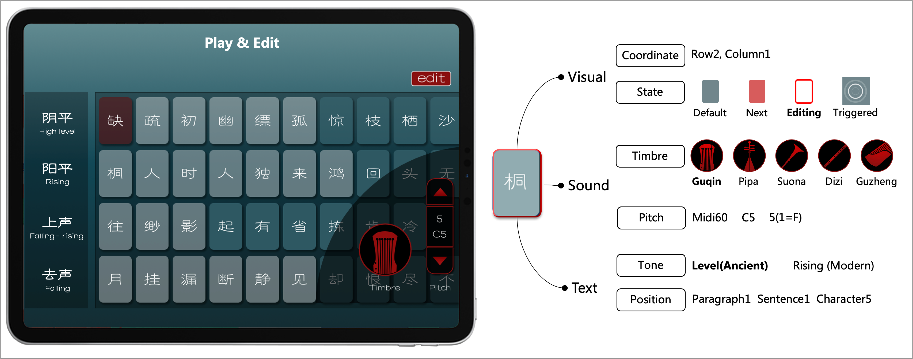

Poems as Musical Instruments: an AI Music Performance Interface Based on the Concepts of Chinese Qin Songs
iPad App Available for Download
Authors
- Songruoyao Wu (Zhejiang University) wsry@zju.edu.cn
- Jiaxing Yu (Zhejiang University) yujx@zju.edu.cn
- Kejun Zhang* (Zhejiang University) zhangkejun@zju.edu.cn
- Wenqi Wu (Zhejiang University) wenqi_wu@zju.edu.cn
- Chongjun Zhong (Zhejiang University) zhong_chongjun@zju.edu.cn
- Xiuqi Li (Zhejiang University) 3210105694@zju.edu.cn
* Corresponding Author
Abstract
The author has designed a new interface of musical expression called Poem-Qin, which reveals the relationship between text and music, supporting self-accompanied singing and cross-media musical practices. Drawing inspiration from Chinese qin songs and movable-type printing, the author creatively integrates Chinese characters into the interface, controlling music with tone inflections and linguistic rhythms. Moreover, they have developed an AI model for text-to-melody composing to assist in creating new music content. User and audience testing has demonstrated that it offers a positive experience and effective creative results.
Available Demo
We have released a trial version of Poem Qin, which includes some pre installed qin songs and supports the performance and personalized adaptation.
Qin Song Performance with Poem Qin
Cases of User Works
We provide an editing mode that encourages users to express personalized artistic thoughts, building upon the foundation of the ancients and AI. The editing tool is embedded in the performance interface of each music piece, assisting users in viewing and modifying the pitch and timbre of each note module.
Case 1. Crossing Jingmen to Bid Farewell
Case 2. Nangezi Theme: Rolling Milky Way in Sky
Process of Music Creation
We plan to launch the creation process to encourage users to show their own creativity. It includes Lyrics creation, style selection, melody generation, and melody editing.